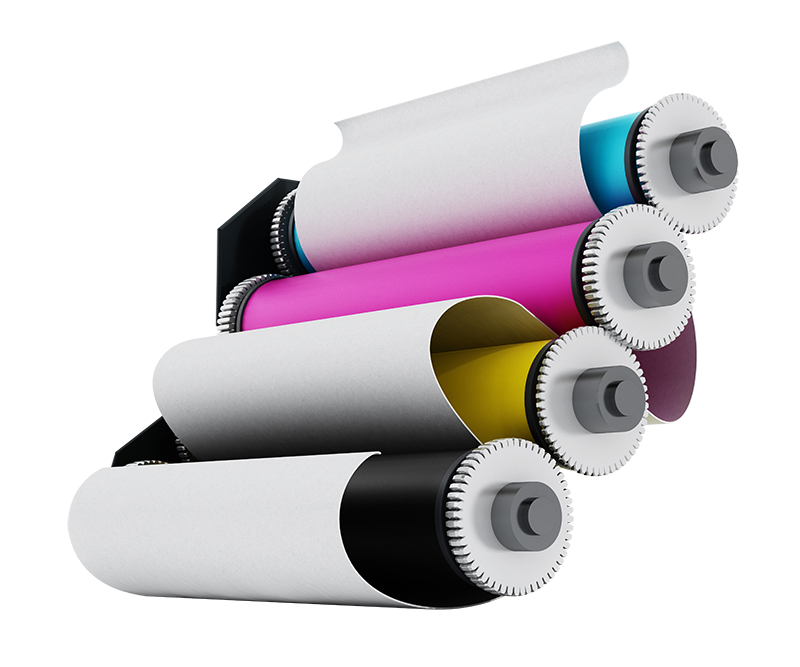

NOSOTROS
Lito Impacto comienza su historia empresarial en el año de 1996 por iniciativa de la pareja de esposos José Vicente Calderón y Dina Luz Ramírez centrando fundamentalmente su actividad en el campo de la impresión litográfica. Gracias a sus conocimientos previos en trabajos freelance de diseño e impresión deciden pasar al siguiente nivel ya con una gestión empresarial, dado esto abren su primera sede ubicada en la calle 19 #10-49, en Girardot, comienza el recorrido de esta historia.

¿QUÉ HACEMOS?
Calidad impresa
- • Contamos con alta calidad de impresión en litografía Offset y digital para tu papelería comercial y publicitaria, disponemos de diversos tipos de papel nacional e importado.
- • Fabricamos e instalamos tus avisos para fachadas, interiores y eventos. Trabajamos con materiales de alta calidad y durabilidad.
- • Elaboramos tu material pop publicitario llevando la imagen de tu marca a un nivel de impacto exitoso.
- • Asesoramos, gestionamos y administramos tu publicidad digital.